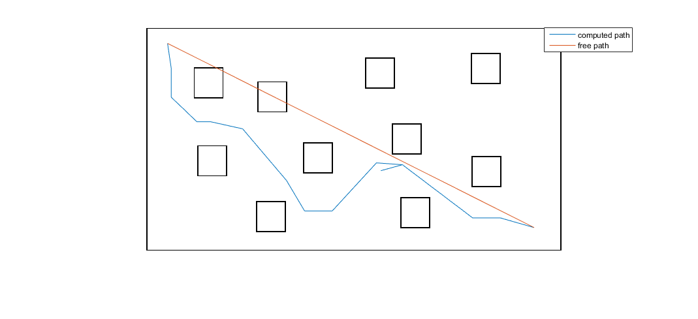

start = [509 115];
goal = [2193 962];
free_length = sqrt((start(1)-goal(1))^2 + (start(2)-goal(2))^2);
num_ants =50 ;
iterations = 10;
Q = 4000;
rho = 0.3;
alpha = 2;
beta = 1;
[map_adj_label,~,set1 ]= find_adj_map( verti , relations_refined , start , goal );
possible_paths = cell(1,num_ants);
for h = 1:iterations
possible_paths = cell(1,num_ants);
for q = 1:num_ants
flag=1;
while(flag)
visited_matrix = [];
adj_point = [];
[adj_point(1),visited_matrix,warning] = choose_adj_point(map_adj_label{1}, visited_matrix,alpha,beta);
i=1;
while (1)
[adj_point(i+1) , visited_matrix , warning] = choose_adj_point(map_adj_label{adj_point(i)}, visited_matrix,alpha,beta);
flag=0;
if(warning)
flag=1;
break;
end
if(adj_point(i+1) == 999999999)
break;
end
i=i+1;
end
end
possible_paths{1,q} = adj_point;
end
map_adj_label = pheromone_update( possible_paths, map_adj_label, Q, rho);
end
total_length = zeros(num_ants,1);
for p=1:num_ants
path = possible_paths{1,p};
dim2 = size(path);
for i=1:dim2(2)-1
adj_points = map_adj_label{1,path(i)};
dim3 = size(adj_points);
for j=1:dim3(1)
if(adj_points(j,1) == path(i+1))
dist = adj_points(j,2);
break;
end
end
total_length(p) = total_length(p) + dist;
end
end
[min_length(i),index_short] = min(total_length);
performance = (min_length - free_length)/free_length;
plot_path( 1 , possible_paths{1,index_short} , set1, start , goal );
Warning: Image is too big to fit on screen; displaying at 33%
Current plot held
Current plot released
